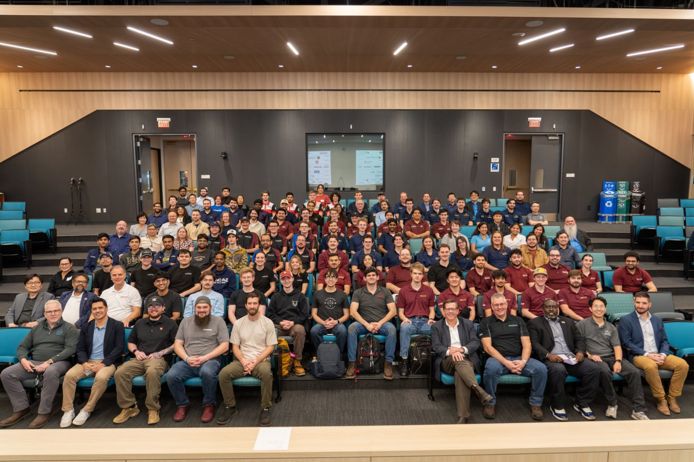
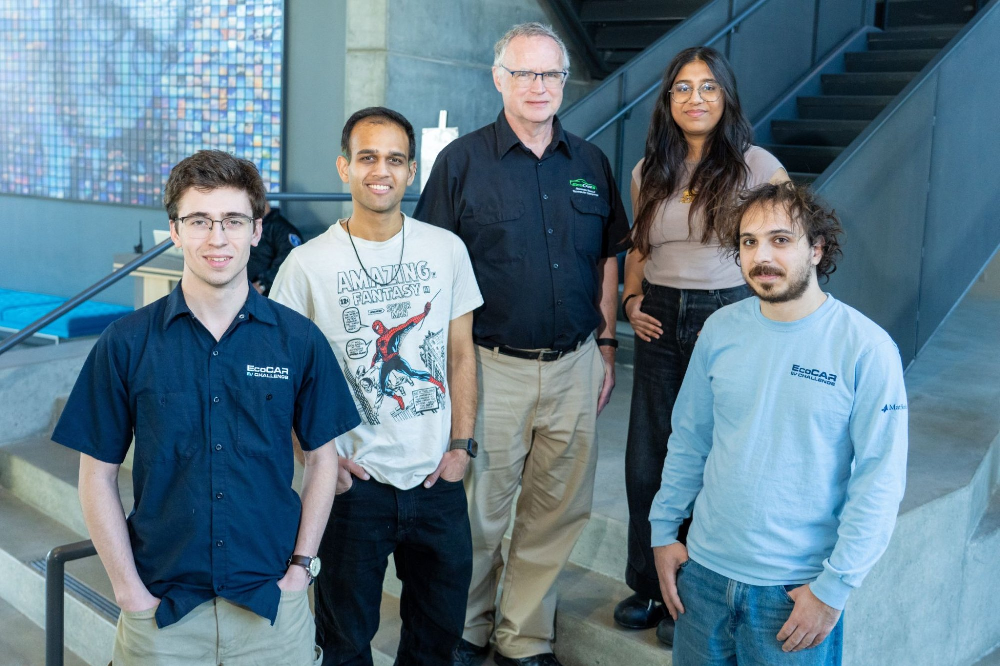
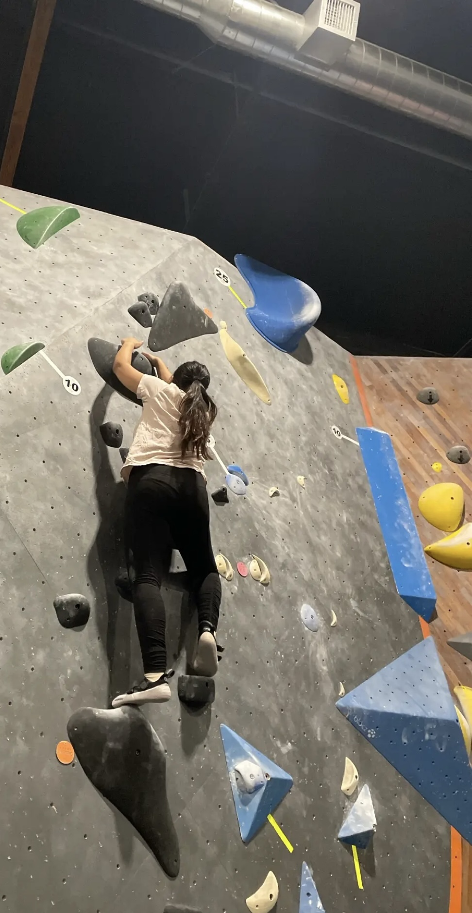

Travelling to the California Air Resources Board (CARB) facility in Riverside with the University of Waterloo EcoCAR Team (UWAFT) was one of the highlights of my year. Arriving at a professional testing environment — surrounded by other universities, industry engineers, and EcoCAR leadership — made everything we had been quietly building feel very real. I was there to learn, observe, and help out wherever I could. I left with more than I expected.

CARB is not a student lab. It is where real vehicles get evaluated for real emissions compliance. Walking in as part of a student team competing in the EcoCAR EV Challenge makes you immediately feel the weight and legitimacy of what everyone has been building throughout the year. Calibration runs, emissions evaluations, design reviews, presentations to industry reps — the full picture of what it actually takes to bring a vehicle to compliance.
Seeing how other teams approached CAV integration was genuinely valuable. It gave our subteam a clearer sense of what we are building toward for finals.
As the Connected and Automated Vehicle (CAV) Undergraduate Lead, my work throughout the year has centred on developing advanced driver assistance and connected vehicle features for our Cadillac LYRIQ competition vehicle: Adaptive Cruise Control (ACC), Cooperative Adaptive Cruise Control (CACC), Lane Centering Control (LCC), and Automatic Intersection Navigation (AIN). Beyond the technical side, the role also means leading undergraduate members, coordinating project direction, and helping integrate our CAV systems with the rest of the vehicle stack — which involves a lot more cross-team communication than you might expect going in.
This year, our CAV subteam was not competing in the CAV testing events at CARB. We hit a cybersecurity blocker that kept our systems out of the eligible build for this phase. It was frustrating, especially watching other university teams demo their CAV features on the floor.
// missing a milestone stings. but attending anyway gave me a wider view of the EcoCAR process than I would have gotten from behind a laptop.
One of the most concrete things CARB reinforced was how much every subsystem in a project like EcoCAR depends on every other one. Propulsion, controls, perception, software — none of it works in isolation. The teams communicating well across subteams showed it clearly. That is something I am carrying back into how I approach coordination within our own group.
Seeing the gap between where we were and where the leading CAV teams were was also useful in a way that is hard to get from reading documentation or watching demos. There is a difference between knowing what needs to be done and seeing what done actually looks like. CARB made that concrete for me.
One evening, members from all the competing teams headed out to a rock climbing gym together. A surprisingly wholesome cross-university social that I did not expect to be a highlight of the week. There is something about struggling up the same wall as someone you just met that fast-tracks a friendship. By the end of the night, we were cheering on people from schools we had been competing against all day.

That is the part nobody puts in the technical report. Design teams can be intense — late nights, debugging sessions, tight deadlines — and it is easy to lose sight of the people behind the work. Travelling together, sharing meals, and celebrating how far we have come as a group was a good reminder of why the team environment matters as much as the technical output.
With our final EcoCAR competition coming up in May, the CARB trip felt like both a checkpoint and a launch pad. For our CAV subteam especially, it sharpened exactly what we need to get across the line — and we have a much clearer picture of the bar we are building toward.
Onwards to May.